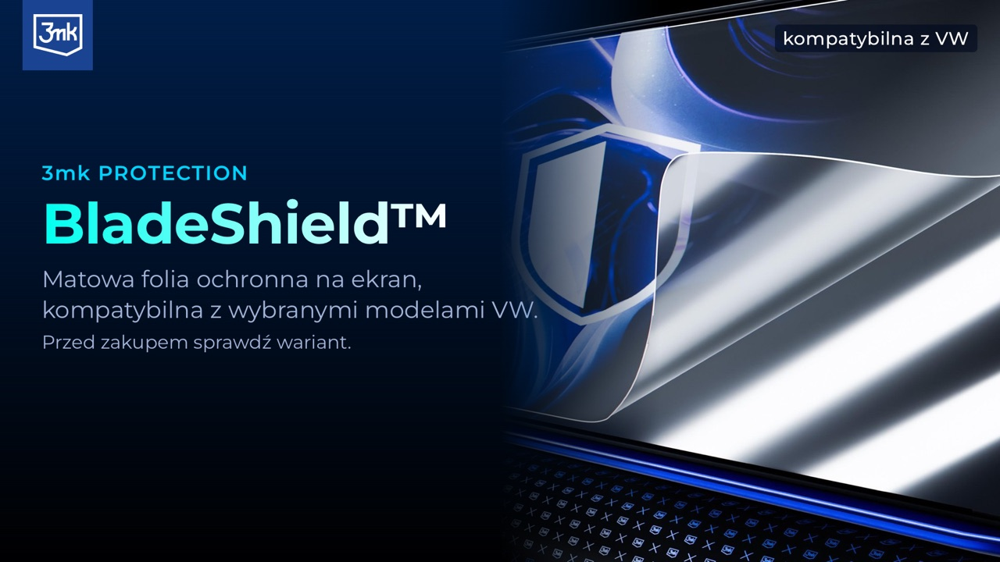
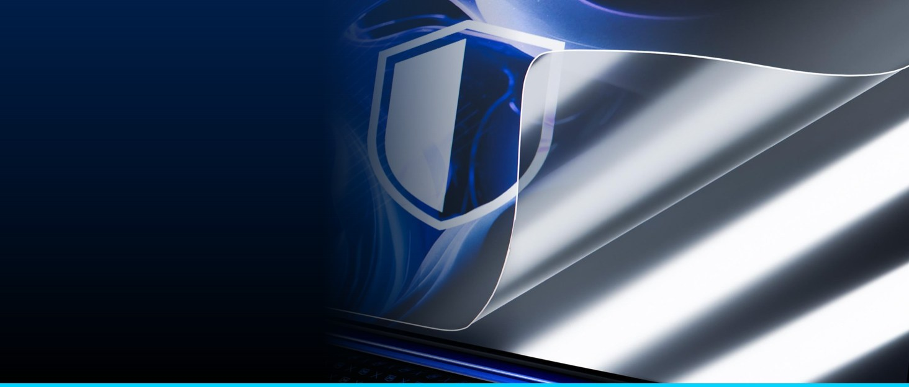
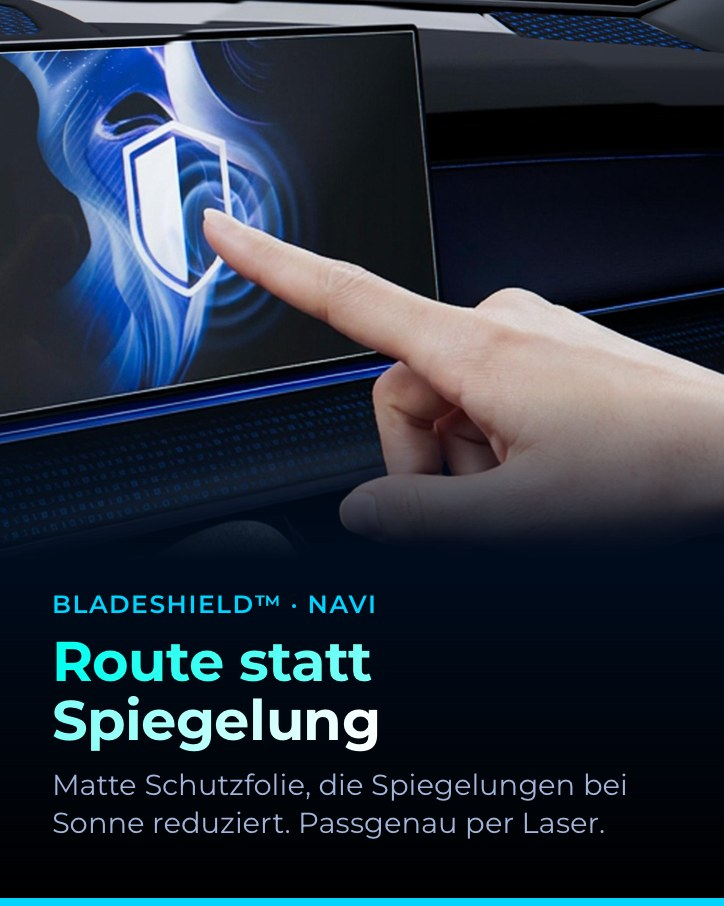
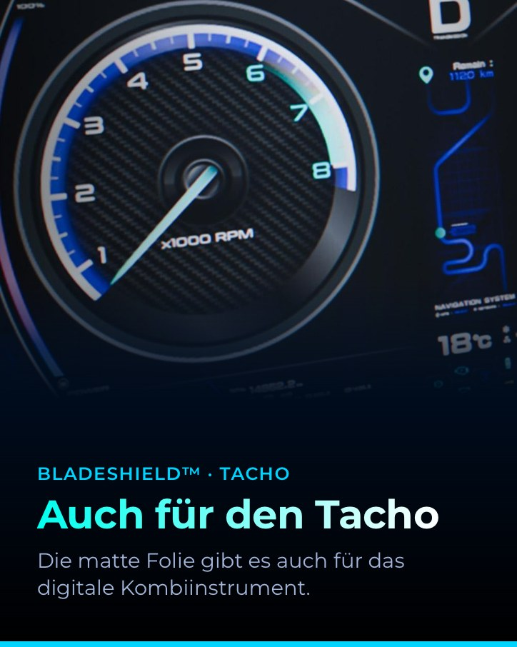
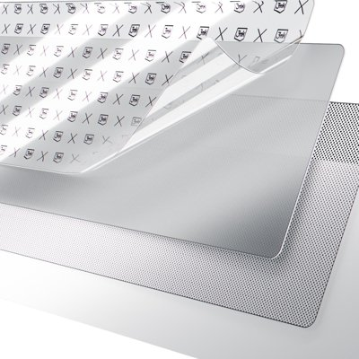
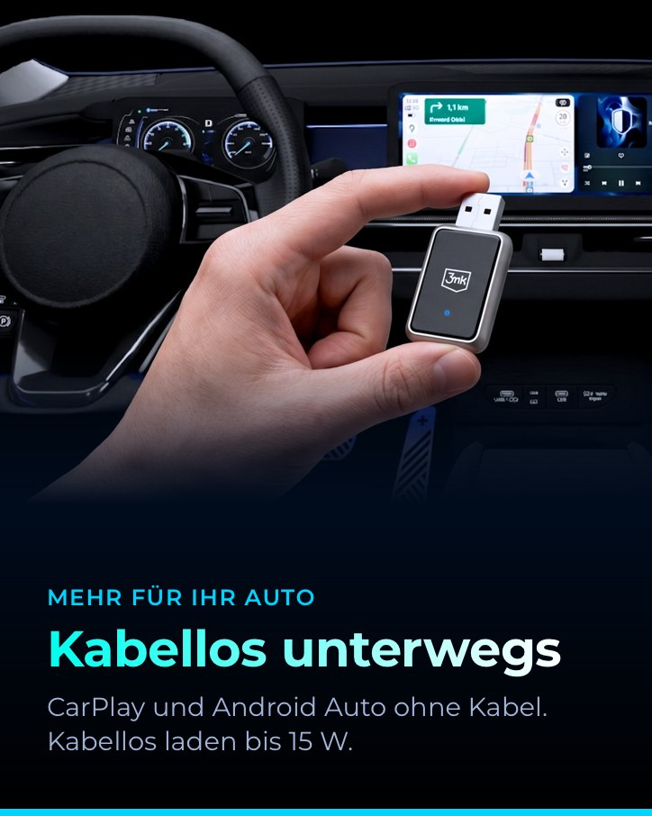
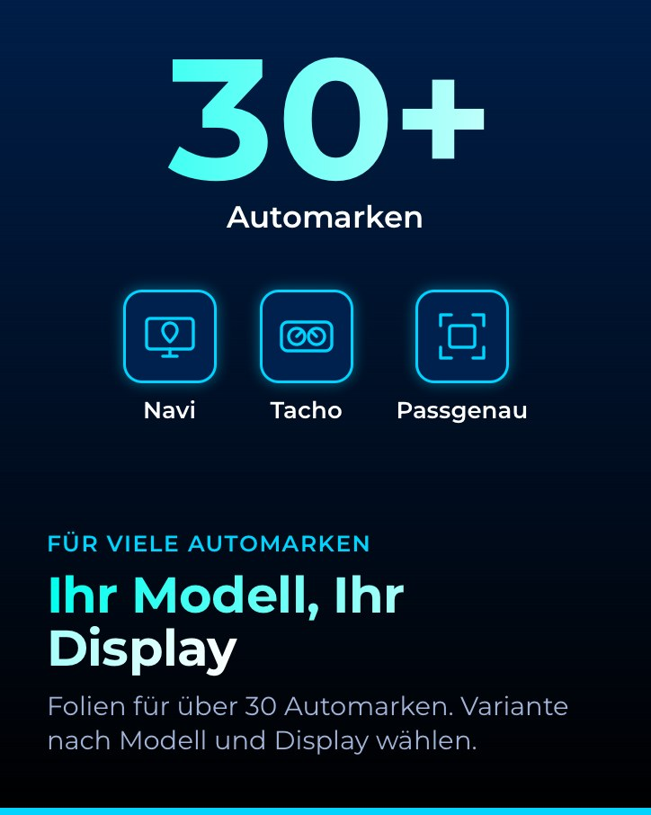
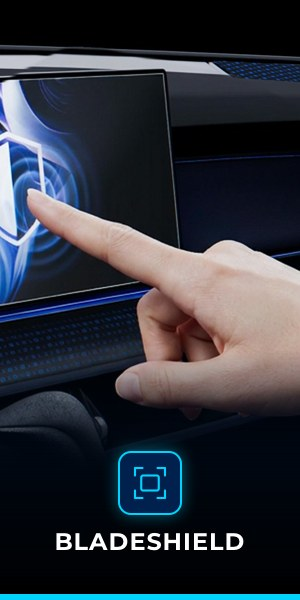
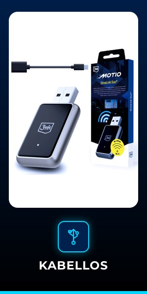
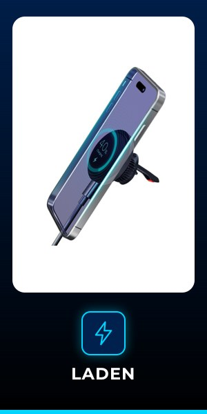

Flow budowania listingu · 3MK-BS-W-BSCeDiL-VWGDP24
1
Treść
tytuł, bullety, opis DE wariantu (z rodziny)
INPUT/listingi/3mk_bladeshield_vw_de.json2
Galeria
7 zdjęć 1600 px (MAIN + PT01-PT06)
OUTPUT/listing-vw/przyklad_3MK-BS-W-BSCeDiL-VWGDP24/galeria/3
A+
6 modułów 1464×600 + 6 mobile 600×450, wspólne dla rodziny
OUTPUT/listing-vw/aplus/4
Wideo
nasze PL (podgląd) i DE (amazon.de) gotowe; montaż 3mk w podglądzie z YouTube, do wgrania na Amazon potrzebny MP4 od 3mk
OUTPUT/listing-vw/wideo/5
Compliance
GPSR PDF wariantu
OUTPUT/compliance/6
Flat file
DRAFT bez szablonu konta 3mk Automotive
OUTPUT/listing-vw/vw_bladeshield_DE_flatfile_DRAFT.xlsx7
Wgranie
BLOKADA: Brand Registry 3mk (rola konta 3mk Automotive)
Seller Central



2 Videos
Besuche den Store von 3mk
3mk Schutzfolie für VW Golf 8 Discover Pro (2020-2024), 10-Zoll-Navi
1 Stück · BladeShield™ · Matt, Anti-Reflex · Passgenau per Laser · Touch auch mit Handschuhen
Modell: Golf 8 Discover Pro 10 Zoll (2020-2024) · Navi
Golf 8 Discover Pro 10 Zoll (2020-2024) · Navi+57 weitere Varianten
Golf 8 Discover Pro 10 Zoll (2020-2024) · Navi+57 weitere Varianten
€3090
Auf Lager
Über diesen Artikel
- [ACHTUNG] NUR FÜR 10-ZOLL-NAVI-DISPLAYS: Bitte prüfen Sie vor dem Kauf die Bildschirmgröße und das System in Ihrem Fahrzeug (Discover Pro). Discover Pro und Discover Media sowie Navi und Tacho haben unterschiedliche Displayformen. Folien für weitere Displays finden Sie in der Variantenauswahl.
- KOMPATIBILITÄT: Kompatibel mit VW Golf 8 (2020-2024), Navi-Display (Mittelkonsole), Discover Pro, 10 Zoll. Passgenau per Laser für dieses Display zugeschnitten, ohne Nachschneiden. Zubehör von 3mk Protection, kein Originalteil des Fahrzeugherstellers.
- MATT STATT SPIEGEL: Die matte Oberfläche von BladeShield™ reduziert Spiegelungen bei Sonne, damit Karte und Anzeigen gut lesbar bleiben. Die oleophobe Beschichtung reduziert Schlieren und Fingerabdrücke, das Display ist schnell gereinigt.
- TOUCH WIE AB WERK, FÜR HITZE UND FROST: Das Display reagiert wie gewohnt auf Berührungen, auch mit Handschuhen. Die Folie ist UV-beständig, bleibt bei extremen Temperaturen stabil und löst sich nicht an den Kanten.
- EINFACHE MONTAGE OHNE BLASEN: Die 4-lagige Struktur von BladeShield™ erleichtert das Anbringen, Luftblasen verschwinden nach der Montage. Lieferumfang: Schutzfolie, Installationsset, Rakel und Montageanleitung.
Videos
Videos für dieses Produkt
0:37
3mk BladeShield Displayschutz für VW
3mk Protection
 2:19
2:19BladeShield Montage
3mk Protection
Von der Marke · Brand Story „3mk für Ihr Auto”, wspólne dla całej oferty automotive 3mk; kafle ASIN: zdjęcia z feedu, ASIN do podmiany po wgraniu; karty z żółtą etykietą wchodzą w fazie 1b/2

3mk für Ihr Auto
Matte Schutzfolien für Navi und Tacho, dazu Zubehör für CarPlay und kabelloses Laden. Von 3mk Protection, einer europäischen Marke.
Über 3mk Protection
3mk Protection ist eine europäische Marke aus Polen. Für das Auto entwickelt 3mk die matte Schutzfolie BladeShield für Navi- und Tacho-Displays, per Laser passgenau für ein bestimmtes Display zugeschnitten. Dazu kommt Zubehör für unterwegs: DriveLink Duo für kabelloses CarPlay und Android Auto sowie eine magnetische Halterung mit kabellosem Laden bis 15 W.


Beliebte BladeShield-Folien

Golf 8 Discover Pro 10 Zoll (2020-2024) · Navi
ASIN: DO PODMIANY

Golf 8 mit 12,9-Zoll-Navi (ab 2024) · Tacho
ASIN: DO PODMIANY

Tiguan III 12,9 Zoll (ab 2024) · Navi
ASIN: DO PODMIANY

Tiguan III Digital Cockpit Pro 10,25 Zoll (ab 2024) · Tacho
ASIN: DO PODMIANY
Shop besuchen ›
faza 1b

faza 2

Fragen und Antworten
Welche Folie passt zu meinem Auto?
Wählen Sie Ihr Modell in der Variantenauswahl und prüfen Sie Größe und System Ihres Displays. Jede Folie ist für ein bestimmtes Display zugeschnitten.
Funktioniert der Touchscreen mit der Folie wie gewohnt?
Ja. Das Display reagiert wie gewohnt auf Berührungen, auch mit Handschuhen.
Für welche Autos ist DriveLink Duo geeignet?
Für Fahrzeuge mit kabelgebundenem Apple CarPlay oder Android Auto über USB. Der Adapter macht die Verbindung kabellos.
Od producenta (A+ Premium) · nie z flat file'a, wgrywasz osobno w A+ Content Manager; wspólne dla 58 wariantów (Navi i Tacho), więc moduły A01-A03 wspominają też Tacho


Mehr von 3mk für Ihr Auto · moduł A+ z tabelą porównawczą, faza 1b: zastępuje A07, gdy DriveLink Duo i Car MagCharger będą miały naszą ofertę
 BladeShield für Ihr Display ASIN: DO USTALENIA w edytorze: ASIN parent rodziny VW, jeśli edytor go przyjmie, inaczej reprezentatywny wariant |  DriveLink Duo ASIN: B0HLDHJ84T |  Car MagCharger for Airvent ASIN: BRAK, nowy listing | |
|---|---|---|---|
| Einsatz im Auto | Navi- oder Tacho-Display, je nach Variante | USB-Anschluss | Lüftungsgitter |
| Matte Oberfläche gegen Spiegelungen | ✓ | ||
| Passgenau per Laser für ein Display | ✓ | ||
| Touch auch mit Handschuhen | ✓ | ||
| Kabelloses CarPlay und Android Auto | Für Autos mit CarPlay oder Android Auto per USB-Kabel | ||
| Kabelloses Laden | bis 15 W | ||
| Smartphone | iPhone und Android | MagSafe-kompatibel | |
| Halterung | Magnetisch |
Produktinformationen
| Marke | 3mk |
|---|---|
| Hersteller | 3mk Protection |
| Modellnummer | W-BSCeDiL-VWGDP24 |
| Modellname | Golf 8 Discover Pro 10 Zoll (2020-2024) · Navi |
| Farbe | Transparent |
| Anzahl der Artikel | 1 |
| Kompatibles Fahrzeug | VW Golf 8 (2020-2024) |
| Garantie | 24 Monate Herstellergarantie |
| Lieferumfang | Schutzfolie BladeShield, Installationsset, Rakel, Montageanleitung |
| EAN | 5903108769204 |
| SKU | 3MK-BS-W-BSCeDiL-VWGDP24 |
| ASIN | noch keine (neuer ASIN nach dem Upload) |
| Produktsicherheit (GPSR) | Sicherheitsinformationen (PDF) |
Produktbeschreibung
3mk BladeShield™ Schutzfolie für VW Golf 8 (2020-2024), Navi-Display (Mittelkonsole), Discover Pro, 10 Zoll
Sonne macht das Display zum Spiegel? Die matte Schutzfolie BladeShield™ von 3mk Protection reduziert Spiegelungen, damit Sie die Route sehen und nicht die Spiegelung. Sie ist per Laser exakt für dieses Display zugeschnitten und lässt sich wie ab Werk bedienen, auch mit Handschuhen.
Technische Daten
Typ: Displayschutzfolie, matt Kompatibilität: VW Golf 8 (2020-2024), Navi-Display (Mittelkonsole), Discover Pro, 10 Zoll Oberfläche: matt, Anti-Reflex, oleophobe Beschichtung Beständigkeit: UV-Strahlung, Hitze und Frost; Kanten lösen sich nicht Funktionen: Touch wie ab Werk, auch mit Handschuhen Montage: 4-lagige Struktur, blasenfreie Montage, Laserzuschnitt
Lieferumfang
Schutzfolie BladeShield™ Installationsset Rakel Montageanleitung
Bitte prüfen Sie vor dem Kauf Größe und System Ihres Displays. Zubehör von 3mk Protection, kein Originalteil des Fahrzeugherstellers.
Sonne macht das Display zum Spiegel? Die matte Schutzfolie BladeShield™ von 3mk Protection reduziert Spiegelungen, damit Sie die Route sehen und nicht die Spiegelung. Sie ist per Laser exakt für dieses Display zugeschnitten und lässt sich wie ab Werk bedienen, auch mit Handschuhen.
Technische Daten
Lieferumfang
Bitte prüfen Sie vor dem Kauf Größe und System Ihres Displays. Zubehör von 3mk Protection, kein Originalteil des Fahrzeugherstellers.